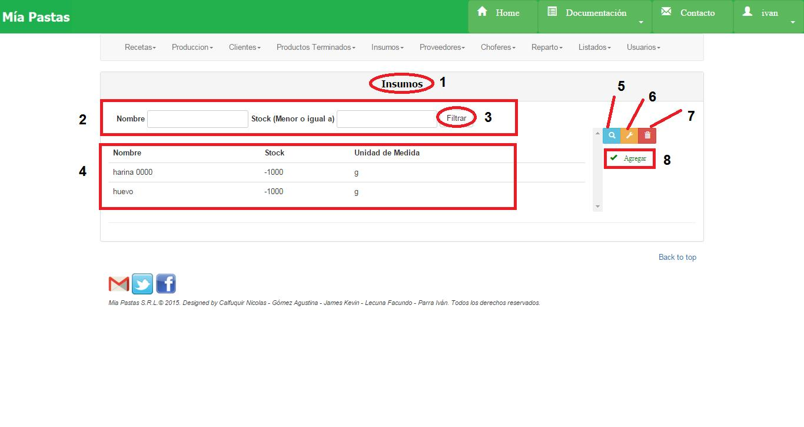
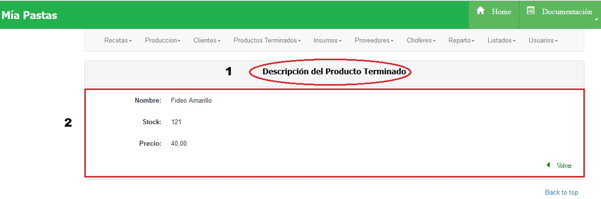
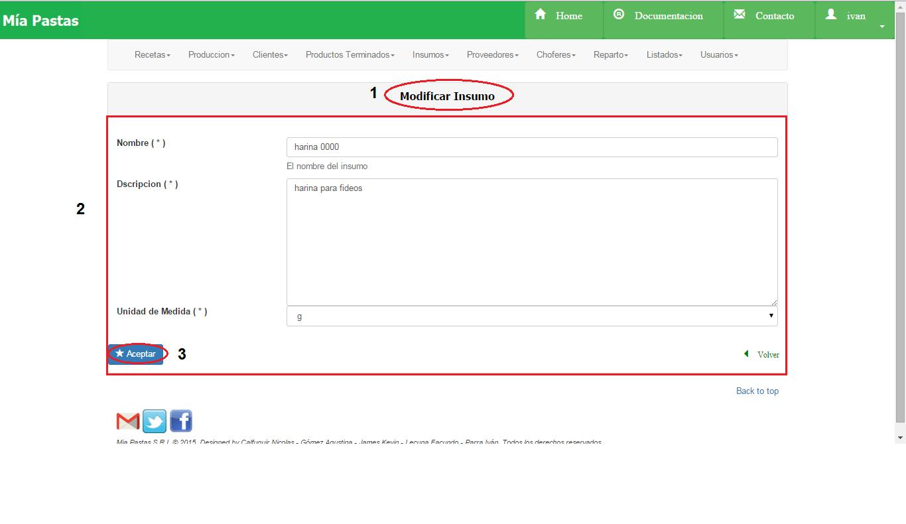
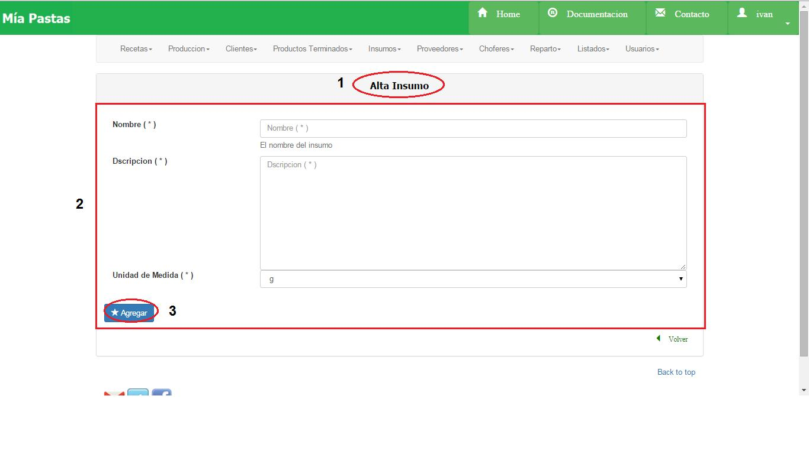

Insumos¶
- Nombre de la sección donde estamos ubicados.
2. Es el sector de filtrado, se podrá filtrar por nombre o por stock. Se filtrará presionando el botón (3). 4. Área de resultado del filtro donde se mostrará nombre, stock y unidad de medida de los insumos filtrados. De no haberse realizado ningún filtro mostrará todos los insumos existentes. 5. El icono de lupa sirve para mostrar más detalle sobre el ítem seleccionado. De no seleccionar previamente un ítem aparecerá un mensaje de error. 6. El icono de llave sirve para realizar una modificación sobre el ítem seleccionado. Para esto se deberá hacer click previamente sobre el ítem deseado. De no seleccionar previamente un ítem aparecerá un mensaje de error. 7. El icono del tacho de basura (7) sirve para eliminar un elemento seleccionado 8. Este botón permite abrir el formulario para dar de Alta un Nuevo Insumo.
Consultar Insumo¶
En (1) vemos la sección en la que estamos ubicados, y en (2) vemos los datos del insumo seleccionado.
Modificar Insumo¶
En (1) vemos la sección donde estamos ubicados. La sección (2) se corresponde al área de modificación, será obligatorio completar los campos que posean un asterisco (*). En la sección (3) se encuentra el botón de aceptar para guardar los cambios.
Alta Insumo¶
- Nombre de la sección en la que nos ubicamos, (2) datos a completar del insumo a crear, (3) confirmar el alta del nuevo insumo.
Eliminar Insumo¶

En (1) vemos la sección donde estamos ubicados. La sección (2) se corresponde al área de modificación, será obligatorio completar los campos que posean un asterisco (*). En la sección (3) se encuentra el botón de aceptar para guardar los cambios.
- Observaciones: No se podrá eliminar un insumo que esté asociado a un pedido vigente a un proveedor. No se podrá eliminar un insumo que esté asociado a una receta.